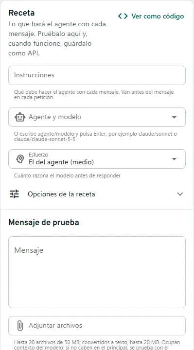
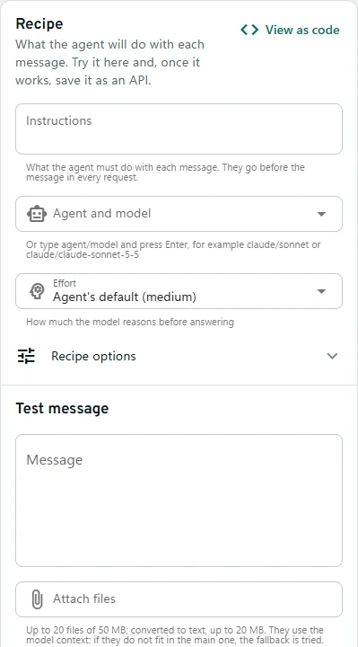
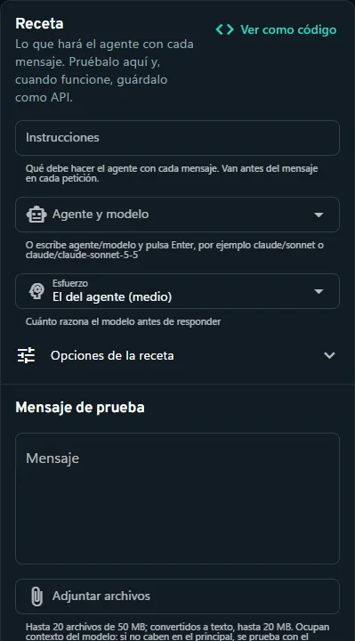
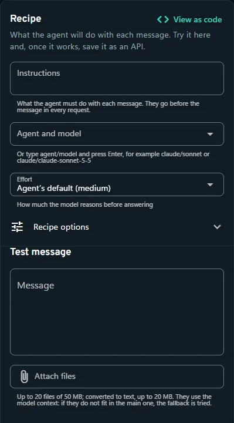

AyudaHelp · Desde tus appsFrom your apps
Recetas y respaldoRecipes and fallback
Una receta fija instrucciones, agente, modelo, esquema y respaldo, para que tu app solo envíe el mensaje.A recipe fixes instructions, agent, model, schema and fallback, so your app only sends the message.
Cómo funcionaHow it works
- 1. La recetaThe recipeInstrucciones, agente y modelo, esfuerzo, esquema y respaldo.Instructions, agent and model, effort, schema and fallback.
- 2. Agente principalMain agentResponde si puede.Answers if it can.
- 3. RespaldoFallbackHasta 3 agentes que siguen, en orden, si el principal falla antes de responder.Up to 3 agents that take over, in order, if the main one fails before answering.
- 4. La respuestaThe responseEl Historial dice qué agente respondió.History says which agent answered.
↳ 2 → 3: Si falla antes de responderIf it fails before answering
Paso a pasoStep by step
- En Probar escribe las instrucciones, por ejemplo «Responde siempre en español».In the Playground write the instructions, for example “Always answer in Spanish”.
- Elige el agente principal y hasta 3 de respaldo, cada uno con su esfuerzo si quieres.Pick the main agent and up to 3 fallbacks, each with its own effort if you like.
- Prueba con un mensaje y tus archivos; cuando funcione, pulsa «Guardar como API».Test it with a message and your files; when it works, click “Save as API”.




PreguntasQuestions
¿Cómo hago que mi app responda en español?How do I make my app answer in a given language?
Crea una API para esa app y escribe en sus instrucciones «Responde siempre en español». Se añaden a cada petición sin cambiar la app.Create an API for that app and write in its instructions “Always answer in Spanish”. They are added to every request without changing the app.
¿Qué pasa si un agente llega a su límite?What if an agent hits its limit?
Si la receta tiene respaldo, sigue el siguiente agente. Si el agente ya había empezado a responder no se cambia, para no mezclar dos respuestas.If the recipe has a fallback, the next agent takes over. If the agent had already started answering it is not switched, so two answers are never mixed.
¿El tiempo límite cuenta por intento?Does the time limit count per attempt?
Sí: cada agente del respaldo tiene el tiempo límite completo.Yes: each fallback agent gets the full time limit.
Si algo fallaIf something fails
- Se alcanzó el límite de uso del proveedorThe provider usage limit was reached
limite_uso_proveedor - Llegaste al límite de tu plan o de tu clave. Espera a que el proveedor lo reinicie o añade un respaldo a la receta.You hit your plan’s or key’s limit. Wait for the provider to reset it or add a fallback to the recipe.
En la terminal: en Probar (3), Enter edita las instrucciones, el agente y el respaldo de la receta, y g la guarda como API. En Mis APIs (4), e la cambia.In the terminal: in the Playground (3), Enter edits the recipe’s instructions, agent and fallback, and g saves it as an API. In My APIs (4), e changes it.